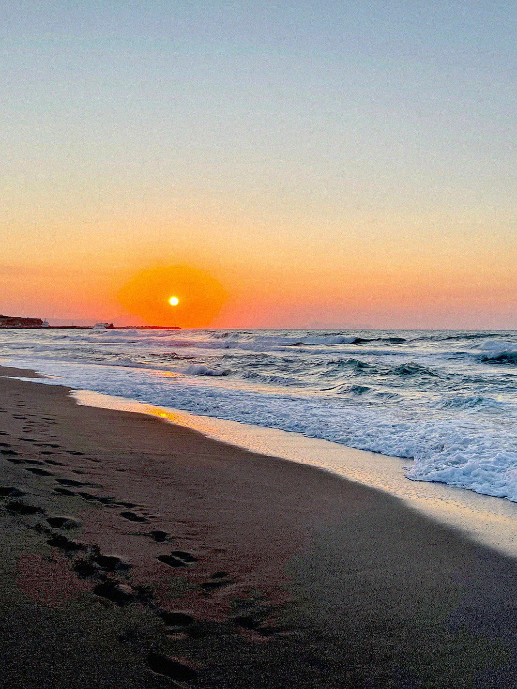

This has been the best summer of my life! I’ve spent every day that I’ve had free with either Vega or Finn or both if they are available! I was so prepared for them to get sick of me after all of this, but nope, we’re still doing cool shit together.
Finn and I have been playing games, both video games and board games. Vega has been cooking this amazing food for us, and I swear I think I’ve gained 10 pounds from eating properly. Absolutely insane.
The four of us, yes, four, including Rowan, all went to the beach together. I’ve never been to the beach before. Normally not my thing. But I got a chance to see Finn in a swimsuit, and yes, my question about how far those freckles went was answered. ૮ >⸝⸝⸝⸝< ა
Anyways, I should probably mention this, since I’m lowkey freaking out about it. But Finn and I shared a bed together one night. And we cuddled. While I was trying to fall asleep, Finn cuddled me in his sleep. And of course, I’ve never done that before and was freaking out. But I didn’t make it stop! So I fell asleep like that.
And the craziest part? Finn wasn’t weirded out or grossed out when he woke up! But, I mean, friends cuddle, right? That was so platonic what happened between us, there’s no way that he likes me. Right? Right.
But yeah, best summer ever. I’ve actually been… happy. I’m starting to feel that more often now. Kind of crazy, if you ask me. Me, being happy. My cheeks hurt at the end of some days because I’ve been smiling and I never use those muscles. Doesn’t take much to make them hurt though.
Cedar